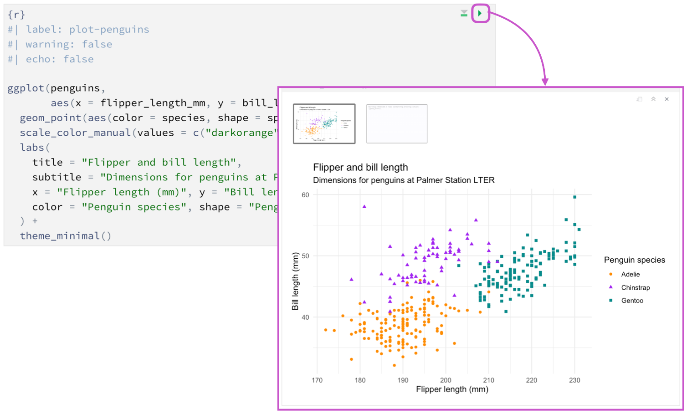
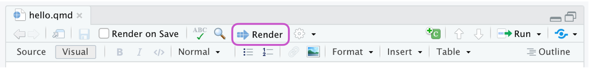

作业02：函数与 tidyverse（复习 + 探索）
先掌握 Quarto 基础，再完成数据分析任务
1 作业目标
本次作业对应第二讲 talk02.qmd，目标是：
- 掌握 Quarto 的基本使用方法，能够在 RStudio 中使用 Quarto 完成作业。
- 巩固 R 函数基础（参数、默认值、作用域）。
- 采用“复习 + 探索”方式初步掌握
ggplot2与dplyr的使用。
预计完成时间：3–4 小时。
2 提交要求（必须遵守）
- 提交两个文件：
homework02.qmdhomework02.html
- 所有代码必须可运行，渲染后 HTML 不报错。
- 本次作业固定使用以下两个数据集：
palmerpenguins::penguinsnycflights13::flights
- 文末必须包含 AI 使用声明（按文末模板填写；未使用也要填写）。
3 Quarto基础
Quarto 是一个支持多语言的文档编写工具，.qmd 文件是其核心格式，可以包含文本、代码和输出结果，编写完成后可以渲染（render）成 HTML、PDF、MS Word 等多种格式。
.qmd文件包括3个主要部分：YAML header、Markdown文本和代码块（code chunk）。
Note
Rstudio 已经内置了 Quarto 支持，无需额外安装。
3.1 YAML header
YAML header 位于 .qmd 文件最顶部，由两行 --- 包裹，用于设置文档的元信息（如标题、作者、日期）和全局选项（如输出格式、目录等）。 以下是一个简单的 YAML header 示例：
---
title: "示例标题"
author: "你的姓名"
format: html
---渲染之后，title的内容（也就是“示例标题”）会显示在 HTML 页面顶部，author会显示在标题下方，format 指定了输出格式为 HTML。
Note
更多关于YAML header的用法可以参考官方文档：Tutorial: Authoring。
3.2 Markdown
Markdown 是一种轻量级标记语言，用于编写格式化文本，包括分级标题、列表、超链接、嵌入图片等。 常用语法：
- 分级标题：
#、##、### - 无序列表：行首加
- - 有序列表：行首加
1.、2. - 行内代码：反引号包裹，例如
mutate()
示例：
Markdown 源码：
## 数据分析
### 数据准备
- 读取数据
- 清洗变量
1. 先筛选：筛选通常使用函数如 `filter()` 来选择满足特定条件的行。
2. 再汇总渲染效果：
数据分析
数据准备
- 读取数据
- 清洗变量
- 先筛选：筛选通常使用函数如
filter()来选择满足特定条件的行。 - 再汇总
Note
更多关于markdown的基础用法可以参考官方教程：Markdown Basics。
3.3 代码块（code chunk）
在.qmd文件，R代码块如下：
```{r}
x <- 1:10
mean(x)
```可以通过设置一些选项来控制代码块在最终渲染成的文件中的行为，例如：
echo: 是否显示代码
```{r}
#| echo: true
x <- 1:10
mean(x)
```eval: 是否执行代码
```{r}
#| eval: false
x <- 1:10
mean(x)
```warning: 是否显示警告信息
```{r}
#| warning: false
x <- 1:10
mean(x)
```
Note
更多关于代码块选项的说明可以参考官方文档：Execution Options。
3.4 在RStudio渲染（render）
在 RStudio 中：
运行当前代码块：点击 chunk 右上角绿色三角。

渲染整个文档：点击 Render 按钮。

渲染成功后生成同名
.html文件。
Note
Quarto 基础用法可以参考官方教程：Get Started。
Note
Quarto 进阶用法可以参考官方手册：guide。
4 模块 A：函数基础（20 分）
4.1 A1. 温度转换函数（10 分）
编写函数 f_to_c()，将华氏温度转换为摄氏温度。
要求：
- 输入参数名为
f - 返回摄氏温度数值
- 用 3 个不同输入测试函数
- 输出保留 1 位小数
4.2 A2. 默认参数与缺失值（6 分）
编写函数 my_center()，实现数值型向量的“均值中心化”：
- 参数至少包含：
x,na_rm = FALSE - 返回：
x - mean(x, na.rm = na_rm) - 用一个包含缺失值的向量测试
4.3 A3. 作用域说明（4 分）
用一个简短示例说明“函数内局部变量不会污染全局环境”，并用 2–3 句话解释结果。
5 模块 B：ggplot2（复习 + 探索，30 分）
使用 palmerpenguins包中的penguins数据集。
5.1 B1. 复习任务（18 分）
复现下图：
提示：
- 参考第二讲
talk02.qmd中的代码。 - 注意x轴和y轴的单位。
5.2 B2. 探索任务（二选一，12 分）
从下面两题中选 1 题完成：
- 分面图：了解
facet_wrap()函数，复现下图，并回答以下问题：
- 为什么存在一个子图为
NA? - 可以如何解决？

- 箱型图：了解
geom_boxplot()函数，复现下图，并回答以下问题：
- 箱型图中的“箱体”、“须”、“离群点”分别代表什么含义？
Biscoe岛上的企鹅体重分布与其他两个岛相比有什么不同？可能的原因是什么？

6 模块 C：dplyr（复习 + 探索，30 分）
使用nycflights13包中的flights 数据集。
6.1 C1. 复习任务（18 分）
构建对象 delay_tbl，完成：
- 筛选:
arr_delay > 20且dep_delay > 20。 - 保留列：
month,day,carrier,flight,dep_delay,arr_delay,distance,air_time。 - 新增变量：
gain = dep_delay - arr_delayspeed = distance / air_time * 60
- 筛选
air_time非缺失NA的行（提示：is.na()）。
6.2 C2. 探索任务（二选一，12 分）
从下面两题中选 1 题完成：
- 不同季节航班延误情况
- 了解
case_when()，新增列”季节”， - 统计各季节的航班数量，以及到达延误时间的中位数和平均数。
- 了解
- 不同航程航班的延误情况
- 了解
if_else()，新增列”是否长途航班”，定义为：distance > 872。 - 统计长途航班和非长途航班的数量，以及到达延误时间的中位数和平均数。
- 了解
7 模块 D：文档表达与规范（20 分）
- 文档结构清晰：有分节标题、列表、必要文字说明。
- 代码与结果对应，可复现。
- 每个模块有结论文字，而不只给代码。
qmd成功渲染出html。
8 Bonus（可选，加分 +10）
8.1 Bonus 1：ggplot2（+10）
了解ggplot2的绘图主题，复现下图：

9 评分标准（总分 100 + Bonus 10）
- 模块 A（函数基础）：20 分
- 模块 B（ggplot2 复习+探索）：30 分
- 模块 C（dplyr 复习+探索）：30 分
- 模块 D（文档表达与规范）：20 分
- Bonus：最多 +10 分
10 提交前检查清单
11 AI 使用声明（必填模板）
请在文末保留并填写以下模板（未使用也要填写）。
11.1 情况 1：我使用了 AI 工具
- 工具名称：
- 具体使用环节（如：报错排查 / 语法查询 / 代码草稿）：
- 我做的人工核查与修改：
- 我确认并对最终提交内容负责：是
11.2 情况 2：我未使用 AI 工具
- 本次作业未使用任何 AI 工具。
- 我确认并对最终提交内容负责：是